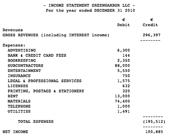
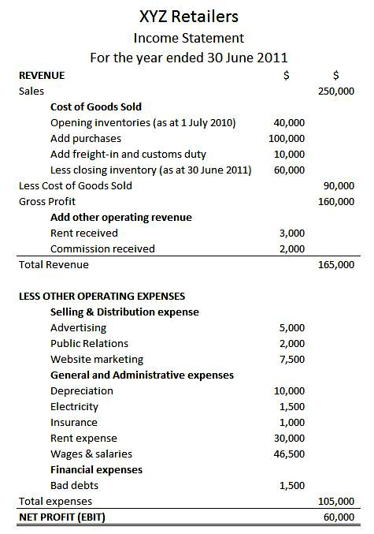
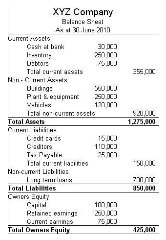
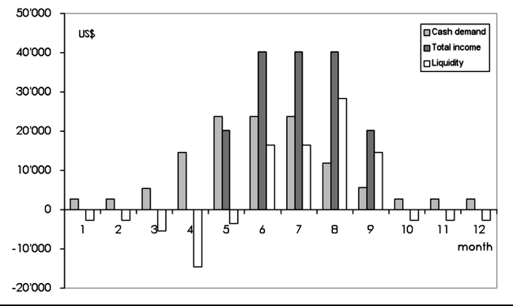
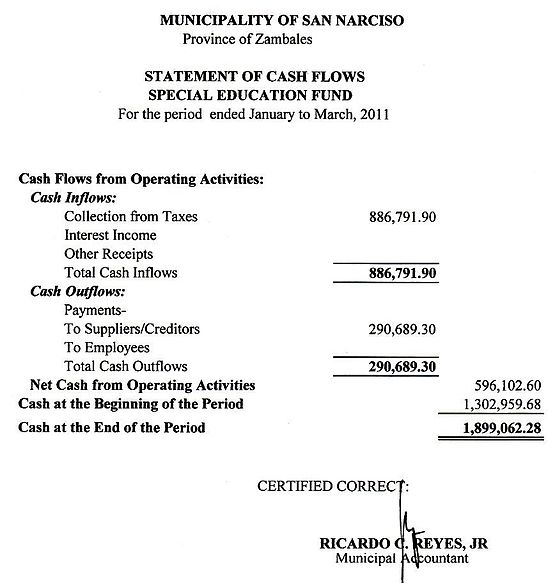
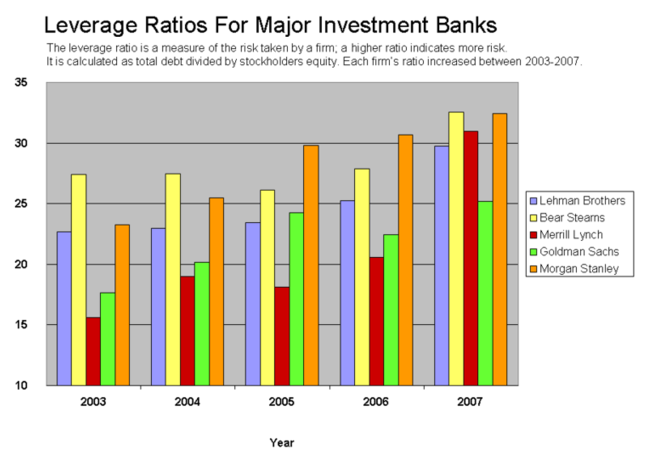
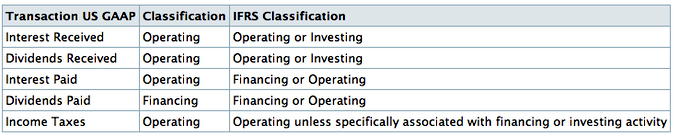
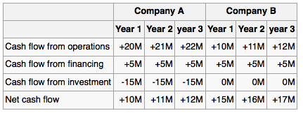
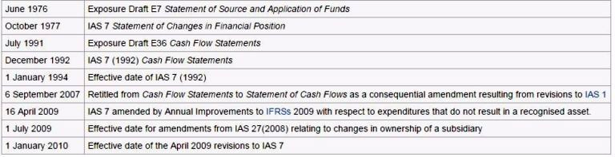

Table of Contents
3. Overview of Financial Statements
3.1. The Income Statement
3.1.1. Defining the Income Statement
3.1.1. Elements of the Income Statement
3.1.1. Noncash Items
3.1.1. Uses of the Income Statement
3.1.1. Limitations of the Income Statement
3.1.1. Effects of GAAP on the Income Statement
3.2. The Balance Sheet
3.2.1. Defining the Balance Sheet
3.2.1. Components of the Balance Sheet
3.2.1. Uses of the Balance Sheet
3.2.1. Preparation of the Balance Sheet
3.2.1. Temporal Classification
3.2.1. Assets
3.2.1. Liabilities and Equity
3.2.1. Liquidity
3.2.1. Working Capital
3.2.1. Debt to Equity
3.2.1. Market Value vs. Book Value
3.2.1. Limitations of the Balance Sheet
3.3. The Statement of Cash Flows
3.3.1. Defining the Statement of Cash Flows
3.3.1. Components of the Statement of Cash Flows
3.3.1. Cash Flow from Financing
3.3.1. Cash Flow from Investing
3.3.1. Cash Flow from Operations
3.3.1. Interpreting Overall Cash Flow
3.3.1. Limitations of the Statement of Cash Flows
3.4. Special Considerations for Merchandising Companies
3.4.1. Overview of Merchandising Operations
3.4.1. Recording Purchases
3.4.1. Recording Sales
3. Overview of Financial Statements
3.1. The Income Statement
3.1.1. Defining the Income Statement
Income statement is a company's financial statement that indicates how the revenue is transformed into the net income.
Learning Objective
Indicate the purpose of the income statement
Key Points
- Income statement displays the revenues recognized for a specific period, and the cost and expenses charged against these revenues, including write-offs and taxes.
- The income statement can be prepared in two methods. The Single Step income statement takes a simpler approach, totaling revenues and subtracting expenses to find the bottom line. The Multi-Step income statement takes several steps to find the bottom line, starting with the gross profit.
- Income statements should help investors and creditors determine the past financial performance of the enterprise, predict future performance, and assess the capability of generating future cash flows through report of the income and expenses.
Key Term
- FIFO
- FIFO is an acronym for First In, First Out, which is an abstraction related to ways of organizing and manipulation of data relative to time and prioritization. This expression describes the principle of a queue processing technique or servicing conflicting demands by ordering process by first-come first-served (FCFS) behaviour: where the persons leave the queue in the order they arrive, or waiting one's turn at a traffic control signal.
Income statement, also referred to as profit and loss statement (P&L), revenue statement, statement of financial performance, earnings statement, operating statement or statement of operations, is a company's financial statement that indicates how the revenue (cash or credit sales of products and services before expenses are taken out) is transformed into the net income (the result after all revenues and expenses have been accounted for, also known as Net Profit or "bottom line"). It displays the revenues recognized for a specific period, and the cost and expenses charged against these revenues, including write-offs (e.g., depreciation and amortization of various assets) and taxes.
{kind=link}
Income statement Green Harbor LLC
The purpose of the income statement is to show managers and investors whether the company made or lost money during the period being reported. The important thing to remember about an income statement is that it represents a period of time. This contrasts with the balance sheet, which represents a single moment in time.
The income statement can be prepared in one of two methods. The Single Step income statement takes a simpler approach, totaling revenues and subtracting expenses to find the bottom line. The more complex Multi-Step income statement (as the name implies) takes several steps to find the bottom line, starting with the gross profit. It then calculates operating expenses and, when deducted from the gross profit, yields income from operations. Adding to income from operations is the difference of other revenues and other expenses. When combined with income from operations, this yields income before taxes. The final step is to deduct taxes, which finally produces the net income for the period measured.
In addition to the Single and Multi-step methods, the income statement can be reported on a cash or accrual basis. An income statement reported on a cash basis is typically used by smaller businesses that record transactions based on the exchange of cash; the revenues and expenses reported reflects cash received on sales and cash paid for expenses for the accounting period. Larger entities use the accrual basis, which is also the recommended method by the FASB. An income statement under accrual accounting reflects revenues "earned", where an exchange in value among the parties has taken place, regardless of whether cash was received. Expenses on the statement have been "incurred", where the business has received a benefit and has paid for it or has recorded a liability to pay it at a future date. As with revenues, the exchange of cash does not dictate the amount reported for the expense.
Income statements should help investors and creditors determine the past financial performance of the enterprise, predict future performance, and assess the capability of the business to generate future revenue streams through the reporting of income and expenses.
However, information of an income statement has several limitations: items that might be relevant but cannot be reliably measured are not reported (e.g. brand recognition and loyalty). Some numbers vary based on the accounting methods used (e.g. using FIFO or LIFO accounting to measure inventory level). Some numbers depend on judgments and estimates (e.g. depreciation expense depends on estimated useful life and salvage value).
Guidelines for statements of comprehensive income and income statements of business entities are formulated by the International Accounting Standards Board and numerous country-specific organizations, for example the FASB in the U.S.
3.1.2. Elements of the Income Statement
The income statement, or profit and loss statement (P&L), reports a company's revenue, expenses, and net income over a period of time.
Learning Objective
Construct a complete income statement
Key Points
- The income statement consists of revenues and expenses along with the resulting net income or loss over a period of time due to earning activities. The income statement shows investors and management if the firm made money during the period reported.
- The operating section of an income statement includes revenue and expenses. Revenue consists of cash inflows or other enhancements of assets of an entity, and expenses consist of cash outflows or other using-up of assets or incurring of liabilities.
- The non-operating section includes revenues and gains from non-primary business activities, items that are either unusual or infrequent, finance costs like interest expense, and income tax expense.
- The "bottom line" of an income statement is the net income that is calculated after subtracting the expenses from revenue. It is important to investors - also on a per share basis (as earnings per share, EPS) - as it represents the profit for the accounting period attributable to the shareholders.
Key Terms
- net income
- Gross profit minus operating expenses and taxes.
- gross profit
- The difference between net sales and the cost of goods sold.
- income statement
- a calculation which shows the profit or loss of an accounting unit during a specific period of time, providing a summary of how the profit or loss is calculated from gross revenue and expenses
- income bond
- a debt instrument where coupon payments are only made if the issuer can afford it
- statement of cash flows
- a financial document that shows how changes in balance sheet accounts and income affect cash and cash equivalents, and breaks the analysis down to operating, investing, and financing activities
Elements of the Income Statement
The income statement is a financial statement that is used to help determine the past financial performance of the enterprise, predict future performance, and assess the capability of generating future cash flows . It is also known as the profit and loss statement (P&L), statement of operations, or statement of earnings.
{kind=link}
Expenses are listed on a company's income statement.
The income statement consists of revenues (money received from the sale of products and services, before expenses are taken out, also known as the "top line") and expenses, along with the resulting net income or loss over a period of time due to earning activities. Net income (the "bottom line") is the result after all revenues and expenses have been accounted for. The income statement reflects a company's performance over a period of time. This is in contrast to the balance sheet, which represents a single moment in time.
Methods for Constructing the Income Statement
The income statement can be prepared in one of two methods: single or multi-step.
The Single Step income statement totals revenues, then subtracts all expenses to find the bottom line.
The more complex Multi-Step income statement (as the name implies) takes several steps to find the bottom line. First, operating expenses are subtracted from gross profit. This yields income from operations. Then other revenues are added and other expenses are subtracted. This yields income before taxes. The final step is to deduct taxes, which finally produces the net income for the period measured.
Operating Revenues and Expenses
The operating section includes revenue and expenses. Revenue consists of cash inflows or other enhancements of the assets of an entity. It is often referred to as gross revenue or sales revenue. Expenses consist of cash outflows or other using-up of assets or incurrence of liabilities.
Elements of expenses include:
- Cost of Goods Sold (COGS): the direct costs attributable to goods produced and sold by a business. It includes items such as material costs and direct labor.
- Selling, General and Administrative Expenses (SG&A): combined payroll costs, except for what has been included as direct labor.
- Depreciation and amortization: charges with respect to fixed assets (depreciation) and intangible assets (amortization) that have been capitalized on the balance sheet for a specific accounting period.
- Research & Development (R&D): expenses included in research and development of products.
Non-operating Revenues and Expenses
The non-operating section includes revenues and gains from non- primary business activities (such as rent or patent income); expenses or losses not related to primary business operations (such as foreign exchange losses); gains that are either unusual or infrequent, but not both; finance costs (costs of borrowing, such as interest expense); and income tax expense.
In essence, if an activity is not a part of making or selling the products or services, but still affects the income of the business, it is a non-operating revenue or expense.
Reading the Income Statement
Certain items must be disclosed separately in the notes if it is material (significant). This could include items such as restructurings, discontinued operations, and disposals of investments or of property, plant and equipment. Irregular items are reported separately so that users can better predict future cash flows.
The "bottom line" of an income statement—often, literally the last line of the statement—is the net income that is calculated after subtracting the expenses from revenue. It is important to investors as it represents the profit for the year attributable to the shareholders. For companies with shareholders, earnings per share (EPS) are also an important metric and are required to be disclosed on the income statement.
3.1.3. Noncash Items
Noncash items, such as depreciation and amortization, will affect differences between the income statement and cash flow statement.
Learning Objective
Identify noncash items that can affect the income statement
Key Points
- Noncash items should be added back in when analyzing income statements to determine cash flow because they do not contribute to the inflow or outflow of cash like other gains and expenses eventually do.
- Depreciation refers to the decrease in value of assets and the allocation of the cost of assets to periods in which the assets are used--for tangible assets, such as machinery.
- Amortization is a similar process to deprecation when applied to intangible assets, such as patents and trademarks.
Key Terms
- obsolescence
- The state of being obsolete—no longer in use; gone into disuse; disused or neglected.
- amortization
- The distribution of the cost of an intangible asset, such as an intellectual property right, over the projected useful life of the asset.
- depreciation
- The measurement of the decline in value of assets. Not to be confused with impairment, which is the measurement of the unplanned, extraordinary decline in value of assets.
Noncash Items
Noncash items that are reported on an income statement will cause differences between the income statement and cash flow statement. Common noncash items are related to the investing and financing of assets and liabilities, and depreciation and amortization. When analyzing income statements to determine the true cash flow of a business, these items should be added back in because they do not contribute to inflow or outflow of cash like other gains and expenses.
Fixed assets, also known as a non-current asset or as property, plant, and equipment (PP&E), is an accounting term for assets and property. Unlike current assets such as cash accounts receivable, PP&E are not very liquid. PP&E are often considered fixed assets: they are expected to have relatively long life, and are not easily changed into another asset . These often receive a more favorable tax treatment than short-term assets in the form of depreciation allowances. Machinery is an example of a noncash asset.
Broadly speaking, depreciation is a way of accounting for the decreasing value of long-term assets over time. A machine bought in 2012, for example, will not be worth the same amount in 2022 because of things like wear-and-tear and obsolescence.
On a more detailed level, depreciation refers to two very different but related concepts: the decrease in the value of tangible assets (fair value depreciation) and the allocation of the cost of tangible assets to periods in which they are used (depreciation with the matching principle). The former affects values of businesses and entities. The latter affects net income.
In each period, long-term noncash assets accrue a depreciation expense that appears on the income statement. Depreciation expense does not require a current outlay of cash, but the cost of acquiring assets does. For example, an asset worth \$100,000 in year 1 may have a depreciation expense of \$10,000, so it appears as an asset worth \$90,000 in year 2.
Amortization is a similar process to deprecation but is the term used when applied to intangible assets. Examples of intangible assets include copyrights, patents, and trademarks.
3.1.4. Uses of the Income Statement
The primary purpose of the income statement is to assess efficiency as revenues transform into profits/losses.
Learning Objective
Utilize income statements to understand organizational efficiency
Key Points
- Revenues are exposed to a number of expense types, and understanding the relationship between costs and revenues is the primary function of the income sheet.
- When looking at profitability, dividing net profit by overall revenues provides insights as to the profitability of revenue from start to finish.
- Another useful metric is the gross margin, which underlines the variable costs attached to adding new units of sales.
- Operating margin provides insights as to how financing impacts overall profitability.
Key Term
- gross margin
- A measurement of how the cost of goods sold per unit impact overall profitability.
Using the Income Statement
The primary purpose of the income statement is to demonstrate the profitability of an organization's operations over a fixed period of time by illustrating how proceeds from operations (i.e. revenues) are transformed into net income (profits and losses).
Compared to the balance sheet and the cash flow statement, the income statement is primarily focused on the actual operational efficiency of the organization. The balance sheet discusses leverage, assets, funding, and other aspects of the organization's existing infrastructure. The cash flow statement is primarily a description of liquidity. The income statement, however, is ultimately about how a given revenue input can be converted to profitability through assessing what is required to attain that revenue.
Assessing Efficiency
The income statement is relatively straight-forward. As an investor or a manager, the simplest way to view each section is by focusing on efficiency. An optimally efficient organization will have higher margins in the following areas:
Profit margin: A higher net profit as a proportion of sales indicates an overall higher capacity to capture returns on revenue. Profit margin is one of the first aspects of an organization a prospective investor will look at when considering the overall validity of a company as an investment. This is calculated as:
Operating Margin: Another useful indicator of profitability is operating income over net sales. Operating income subtracts the cost of goods sold (COGS) alongside selling, general, and administrative expenses (SG&A), leaving the overall profit before taxes and interest on financial debt. Comparing this to the overall profit margin can give useful indications of reliance on debt. It's calculated as:
Another useful indicator is the gross margin. This essentially demonstrates the added value of each unit of sales, as it focuses exclusively on the impact of the cost of goods sold (COGS). COGS represents the costs incurred (directly) from materials, labor, and production of each individual unit. This can be a great indicator of how scalable an operation is, and the relative return an organization will see as they achieve growth.
{kind=link}
This is a simple example of the typical line items on an income statement.
3.1.5. Limitations of the Income Statement
Income statements have several limitations stemming from estimation difficulties, reporting error, and fraud.
Learning Objective
Demonstrate how the limitations of the income statement can influence valuation
Key Points
- Income statements include judgments and estimates, which mean that items that might be relevant but cannot be reliably measured are not reported and that some reported figures have a subjective component.
- With respect to accounting methods, one of the limitations of the income statement is that income is reported based on accounting rules and often does not reflect cash changing hands.
- Income statements can also be limited by fraud, such as earnings management, which occurs when managers use judgment in financial reporting to intentionally alter financial reports to show an artificial increase (or decrease) of revenues, profits, or earnings per share figures.
Key Terms
- LIFO
- Method for accounting for inventory. LIFO stands for last-in, first-out, and assumes that the most recently produced items are recorded as sold first.
- FIFO
- Method for for accounting for inventories. FIFO stands for first-in, first-out, and assumes that the oldest inventory items are recorded as sold first.
- matching principle
- According to the principle, expenses are recognized when obligations are (1) incurred (usually when goods are transferred or services rendered, e.g. sold), and (2) offset against recognized revenues, which were generated from those expenses, no matter when cash is paid out. In cash accounting—in contrast—expenses are recognized when cash is paid out.
Income statements are a key component to valuation but have several limitations: items that might be relevant but cannot be reliably measured are not reported (such as brand loyalty); some figures depend on accounting methods used (for example, use of FIFO or LIFO accounting); and some numbers depend on judgments and estimates. In addition to these limitations, there are limitations stemming from the intentional manipulation of finances.
One of the limitations of the income statement is that income is reported based on accounting rules and often does not reflect cash changing hands. This could be due to the matching principle, which is the accounting principle that requires expenses to be matched to revenues and reported at the same time. Expenses incurred to produce a product are not reported in the income statement until that product is sold. Another common difference across income statements is the method used to calculate inventory, either FIFO or LIFO.

Accounting for inventory can be done in different ways, leading to differences in statements.
In addition to good faith differences in interpretations and reporting of financial data in income statements, these financial statements can be limited by intentional misrepresentation. One example of this is earnings management, which occurs when managers use judgment in financial reporting and in structuring transactions to alter financial reports in a way that usually involves the artificial increase (or decrease) of revenues, profits, or earnings per share figures.
The goal with earnings management is to influence views about the finances of the firm. Aggressive earnings management is a form of fraud and differs from reporting error. Managers could seek to manage earnings for a number of reasons. For example, if a manager earns his or her bonus based on revenue levels at the end of December, there is an incentive to try to represent more revenues in December so as to increase the size of the bonus.
While it is relatively easy for an auditor to detect error, part of the difficulty in determining whether an error was intentional or accidental lies in the accepted recognition that calculations are estimates. It is therefore possible for legitimate business practices to develop into unacceptable financial reporting.
3.1.6. Effects of GAAP on the Income Statement
GAAP's assumptions, principles, and constraints can affect income statements through temporary (timing) and permanent differences.
Learning Objective
Apply the four basic GAAP principles when preparing financial statements
Key Points
- Items that create temporary differences due to the recording requirements of GAAP include rent or other revenue collected in advance, estimated expenses, and deferred tax liabilities and assets.
- Also there are events, usually one-time events, which create "permanent differences," such as GAAP recognizing as an expense an item that the IRS will not allow to be deducted.
- The four basic principles of GAAP can affect items on the income statement. These principles include the historical cost principle, revenue recognition principle, matching principle, and full disclosure principle.
Key Terms
- fair market value
- An estimate of the market value of a property, based on what a knowledgeable, willing, and unpressured buyer would probably pay to a knowledgeable, willing, and unpressured seller in the market. An estimate of fair market value may be founded either on precedent or extrapolation but is subjective. Fair market value differs from other ways of determining value, such as intrinsic and imposed value.
- deferred
- Of or pertaining to a value that is not realized until a future date, e.g. annuities, charges, taxes, income, either as an asset or liability.
Although most of the information on a company's income tax return comes from the income statement, there often is a difference between pretax income and taxable income. These differences are due to the recording requirements of GAAP for financial accounting (usually following the matching principle and allowing for accruals of revenue and expenses) and the requirements of the IRS's tax regulations for tax accounting (which are more oriented to cash).

GAAP and IRS accounting can differ.
Such timing differences between financial accounting and tax accounting create temporary differences. For example, rent or other revenue collected in advance, estimated expenses, and deferred tax liabilities and assets may create timing differences. Also, there are events, usually one time, which create "permanent differences," such as GAAP, which recognizes as an expense an item that the IRS will not allow to be deducted.
To achieve basic objectives and implement fundamental qualities, GAAP has four basic principles:
- The historical cost principle: It requires companies to account and report based on acquisition costs rather than fair market value for most assets and liabilities.
- The revenue recognition principle. It requires companies to record when revenue is (1) realized or realizable and (2) earned, not when cash is received.
- The matching principle. This governs the matching of expenses and revenues, where expenses are recognized, not when the work is performed or when a product is produced, but when the work or the product actually makes its contribution to revenue.
- The full disclosure principle. This suggests that the amount and kinds of information disclosed should be decided based on a trade-off analysis, since a larger amount of information costs more to prepare and use. GAAP reporting also suggests that income statements should present financial figures that are objective, material, consistent, and conservative.
3.2. The Balance Sheet
3.2.1. Defining the Balance Sheet
A balance sheet reports a company's financial position on a specific date.
Learning Objective
State the purpose of the balance sheet and recognize what accounts appear on the balance sheet
Key Points
- The balance sheet summarizes a business's assets, liabilities, and shareholders' equity.
- A balance sheet is like a photograph; it captures the financial position of a company at a particular point in time.
- The balance sheet is sometimes called the statement of financial position.
- The balance sheet shows the accounting equation in balance. A company's assets must equal their liabilities plus shareholders' equity.
Key Terms
- balance sheet
- A balance sheet is often described as a "snapshot of a company's financial condition. " A standard company balance sheet has three parts: assets, liabilities, and ownership equity.
- asset
- Items of ownership convertible into cash; total resources of a person or business, as cash, notes and accounts receivable; securities and accounts receivable, securities, inventories, goodwill, fixtures, machinery, or real estate (as opposed to liabilities).
- liability
- An obligation, debt, or responsibility owed to someone.
Balance Sheet
The balance sheet, sometimes called the statement of financial position, lists the company's assets, liabilities,and stockholders' equity (including dollar amounts) as of a specific moment in time. That specific moment is the close of business on the date of the balance sheet. A balance sheet is like a photograph; it captures the financial position of a company at a particular point in time. The other two statements are for a period of time. As you study about the assets, liabilities, and stockholders' equity contained in a balance sheet, you will understand why this financial statement provides information about the solvency of the business.
{kind=link}
If an error is found on a previous year's financial statement, a correction must be made and the financials reissued.
The balance sheet is a formal document that follows a standard accounting format showing the same categories of assets and liabilities regardless of the size or nature of the business. Accounting is considered the language of business because its concepts are time-tested and standardized. Even if you do not utilize the services of a certified public accountant, you or your bookkeeper can adopt certain generally accepted accounting principles (GAAP) to develop financial statements. The strength of GAAP is the reliability of company data from one accounting period to another and the ability to compare the financial statements of different companies.
Balance Sheet Formats
Standard accounting conventions present the balance sheet in one of two formats: the account form (horizontal presentation) and the report form (vertical presentation). Most companies favor the vertical report form, which doesn't conform to the typical explanation in investment literature of the balance sheet as having "two sides" that balance out.
Whether the format is up-down or side-by-side, all balance sheets conform to a presentation that positions the various account entries into five sections:
Assets = Liabilities + Equity
1. Current assets (short-term): items that are convertible into cash within one year
2. Non-current assets (long-term): items of a more permanent nature
3. Current liabilities (short-term): obligations due within one year
4. Non-current liabilities (long-term): obligations due beyond one year
5. Shareholders' equity (permanent): shareholders' investment and retained earnings
Account Presentation
In the asset sections mentioned above, the accounts are listed in the descending order of their liquidity (how quickly and easily they can be converted to cash). Similarly, liabilities are listed in the order of their priority for payment. In financial reporting, the terms "current" and "non-current" are synonymous with the terms "short-term" and "long-term," respectively, so they are used interchangeably.
Each of the three segments on the balance sheet will have many accounts within it that document the value of each. Accounts such as cash, inventory, and property are on the asset side of the balance sheet, while on the liability side there are accounts such as accounts payable or long-term debt. The exact accounts on a balance sheet will differ by company and by industry.
3.2.2. Components of the Balance Sheet
The balance sheet relationship is expressed as; Assets = Liabilities + Equity.
Learning Objective
Differentiate between the three balance sheet accounts of asset, liability and shareholder's equity
Key Points
- Assets have value because a business can use or exchange them to produce the services or products of the business.
- Liabilities are the debts owed by a business, often incurred to fund its operation.
- A company's equity represents retained earnings and funds contributed by its shareholders.
Key Terms
- Assets
- A resource with economic value that an individual, corporation, or country owns or controls with the expectation that it will provide future benefit.
- liabilities
- Probable future sacrifices of economic benefits arising from present obligations to transfer assets or providing services as a result of past transactions or events.
- equity
- Ownership interest in a company, as determined by subtracting liabilities from assets.
Components of the Balance Sheet
The balance sheet contains statements of assets, liabilities, and shareholders' equity.
Assets represent things of value that a company owns and has in its possession, or something that will be received and can be measured objectively. They are also called the resources of the business, some examples of assets include receivables, equipment, property and inventory. Assets have value because a business can use or exchange them to produce the services or products of the business.
Liabilities are the debts owed by a business to others–creditors, suppliers, tax authorities, employees, etc. They are obligations that must be paid under certain conditions and time frames. A business incurs many of its liabilities by purchasing items on credit to fund the business operations.
A company's equity represents retained earnings and funds contributed by its owners or shareholders (capital), who accept the uncertainty that comes with ownership risk in exchange for what they hope will be a good return on their investment.
Fundamental Relationship
The relationship of these items is expressed in the fundamental balance sheet equation:
Assets = Liabilities + Equity
The meaning of this equation is important. Generally, sales growth, whether rapid or slow, dictates a larger asset base - higher levels of inventory, receivables, and fixed assets (plant, property, and equipment). As a company's assets grow, its liabilities and/or equity also tends to grow in order for its financial position to stay in balance. How assets are supported, or financed, by a corresponding growth in payables, debt liabilities, and equity reveals a lot about a company's financial health.
3.2.3. Uses of the Balance Sheet
The balance sheet of a business provides a snapshot of its financial status at a particular point in time.
Learning Objective
Give examples of how the balance sheet is used by internal and external users
Key Points
- The Balance Sheet is used for financial reporting and analysis as part of the suite of financial statements.
- Financial statement analysis consists of applying analytical tools and techniques to financial statements and other relevant data to obtain useful information.
- Investors, creditors, and regulatory agencies generally focus their analysis of financial statements on the company as a whole. Since they cannot request special-purpose reports, external users must rely on the general purpose financial statements that companies publish.
Key Term
- liquidity
- A company's ability to meet its payment obligations, in terms of possessing sufficient liquid assets.
Uses Of the Balance Sheet
The Balance Sheet is used for financial reporting and analysis as part of the suite of financial statements. The balance sheet is one of the financial reports included in a company's annual report.
Management's analysis of financial statements primarily relates to parts of the company. Using this approach, management can plan, evaluate, and control operations within the company. Management obtains any information it wants about the company's operations by requesting special-purpose reports. It uses this information to make difficult decisions, such as which employees to lay off and when to expand operations.
Investors, creditors, and regulatory agencies generally focus their analysis of financial statements on the company as a whole. Since they cannot request special-purpose reports, external users must rely on the general purpose financial statements that companies publish. These statements include the balance sheet, an income statement, a statement of stockholders' equity, a statement of cash flows, and the explanatory notes that accompany the financial statements.
Users of financial statements need to pay particular attention to the explanatory notes, or the financial review, provided by management in annual reports. This integral part of the annual report provides insight into the scope of the business, the results of operations, liquidity and capital resources, new accounting standards, and geographic area data.
Financial statement analysis consists of applying analytical tools and techniques to financial statements and other relevant data to obtain useful information. This information reveals significant relationships between data and trends in those data that assess the company's past performance and current financial position. The information shows the results or consequences of prior management decisions. In addition, analysts use the information to make predictions that may have a direct effect on decisions made by users of financial statements.
Balance Sheet Substantiation
The balance sheet is an especially useful tool when it comes to the substantiation of various accounts. Balance sheet substantiation is the accounting process conducted by businesses on a regular basis to confirm that the balances held in the primary accounting system of record are reconciled (in balance with) with the balance and transaction records held in the same or supporting sub-systems. It includes multiple processes including reconciliation (at a transactional or at a balance level) of the account, a process of review of the reconciliation and any pertinent supporting documentation, and a formal certification (sign-off) of the account in a predetermined form driven by corporate policy
Balance sheet substantiation is an important process that is typically carried out on a monthly, quarterly and year-end basis. The results help to drive the regulatory balance sheet reporting obligations of the organization. Historically, substantiation has been a wholly manual process, driven by spreadsheets, email and manual monitoring and reporting. In recent years software solutions have been developed to bring a level of process automation, standardization and enhanced control to the substantiation or account certification process. These solutions are suitable for organizations with a high volume of accounts and/or personnel involved in the substantiation process and can be used to drive efficiencies, improve transparency and help to reduce risk.
3.2.4. Preparation of the Balance Sheet
Balance sheets are prepared with either one or two columns, with assets first, followed by liabilities and net worth.
Learning Objective
Identify the elements of a properly formatted balance sheet
Key Points
- Balance sheets are usually prepared at the close of an accounting period, such as month-end, quarter-end, or year-end.
- Current assets most commonly used by small businesses are cash, accounts receivable, inventory and prepaid expenses.
- There are two types of liabilities: current liabilities and long-term liabilities. Liabilities are arranged on the balance sheet in order of how soon they must be repaid.
Key Terms
- Fixed assets
- Assets that produce revenues. They are distinguished from current assets by their longevity. They are not for resale.
- depreciation
- Depreciation subtracts a specified amount from the original purchase price to account for the wear and tear on the asset.
- inventory
- Inventory includes goods ready for sale, as well as raw material and partially completed products that will be for sale when they are completed.
How to Prepare a Balance Sheet
All balance sheets follow the same format: when two columns are used, assets are on the left, liabilities are on the right, and net worth is beneath liabilities. When one column is used, assets are listed first, followed by liabilities and net worth. Balance sheets are usually prepared at the close of an accounting period.
Current Assets
To start, focus on the current assets most commonly used by small businesses: cash, accounts receivable, inventory and prepaid expenses. Cash includes cash on hand, in the bank, and in petty cash. Accounts receivable is what you are owed by customers. To make this number more realistic, an amount should be deducted from accounts receivable as an allowance for bad debts.
Inventory may be the largest current asset. On a balance sheet, the value of inventory is the cost required to replace it if the inventory were destroyed, lost, or damaged. Inventory includes goods ready for sale, as well as raw material and partially completed products that will be for sale when they are completed.
Prepaid expenses are listed as a current asset because they represent an item or service that has been paid for but has not been used or consumed. An example of a prepaid expense is the last month of rent on a lease that may have been prepaid as a security deposit. The prepaid expense will be carried as an asset until it is used. Prepaid insurance premiums are another example of prepaid expenses. Sometimes, prepaid expenses are also referred to as unexpired expenses. On a balance sheet, current assets are totaled and this total is shown as the line item called "total current assets. "
Fixed Assets
Fixed assets are the assets that produce revenues. They are distinguished from current assets by their longevity. They are not for resale. Many small businesses may not own a large amount of fixed assets, because most small businesses are started with a minimum of capital. Of course, fixed assets will vary considerably and depend on the business type (such as service or manufacturing), size, and market.
Fixed assets include furniture and fixtures, motor vehicles, buildings, land, building improvements (or leasehold improvements), production machinery, equipment and any other items with an expected business life that can be measured in years. All fixed assets (except land) are shown on the balance sheet at original (or historic) cost, minus any depreciation. Subtracting depreciation is a conservative accounting practice to reduce the possibility of over valuation. Depreciation subtracts a specified amount from the original purchase price for the wear and tear on the asset.
It is important to remember that original cost may be more than the asset's invoice price. It can include shipping, installation, and any associated expenses necessary for readying the asset for service. Assets are arranged in order of how quickly they can be turned into cash. Like the other fixed assets on the balance sheet, machineryand equipment will be valued at the original cost minus depreciation. "Other assets" is a category of fixed assets. Other assets are generally intangible assets such as patents, royalty arrangements, and copyrights.
Liabilities
Liabilities are claims of creditors against the assets of the business. These are debts owed by the business.There are two types of liabilities: current liabilities and long-term liabilities. Liabilities are arranged on the balance sheet in order of how soon they must be repaid. For example, accounts payable will appear first as they are generally paid within 30 days. Notes payable are generally due within 90 days and are the second liability to appear on the balance sheet.
Current liabilities include the following:
- Accounts payable
- Notes payable to banks (or others)
- Accrued expenses (such as wages and salaries)
- Taxes payable
- The current amount due within a one year portion of long-term debt
- Any other obligations to creditors due within one year of the date of the balance sheet
The current liabilities of most small businesses include accounts payable, notes payable to banks, and accrued payroll taxes. Accounts payable is the amount you may owe any suppliers or other creditors for services or goods that you have received but not yet paid for. Notes payable refers to any money due on a loan during the next 12 months. Accrued payroll taxes would be any compensation to employees who have worked, but have not been paid at the time the balance sheet is created.
Liabilities are arranged on the balance sheet in order of how soon they must be repaid.
Long-term liabilities are any debts that must be repaid by your business more than one year from the date of the balance sheet. This may include start up financing from relatives, banks, finance companies, or others.
3.2.5. Temporal Classification
Cash, receivables, and liabilities on the Balance Sheet are re-measured into U.S. dollars using the current exchange rate.
Learning Objective
Identify when it would be necessary to use the temporal method on the balance sheet
Key Points
- Inventory, property, equipment, patents, and contributed capital accounts are re-measured at historical rates resulting in differences in total assets and liabilities plus equity which must be reconciled resulting in a re-measurement gain or loss.
- If a company's functional currency is the U.S. dollar, then any balances denominated in the local or foreign currency, must be re-measured.
- The re-measurement gain or loss appears on the income statement.
Key Terms
- Temporal Method
- Cash, receivables, and liabilities are re-measured into U.S. dollars using the current exchange rate.
- translation
- Uses exchange rates based on the time assets. Liabilities acquired or incurred are required.
A Classified Balance Sheet
"Classified" means that the balance sheet accounts are presented in distinct groupings, categories, or classifications. Most accounting balance sheets classify a company's assets and liabilities into distinct groups such as current assets property, plant, equipment, current liabilities, etc. These classifications make the balance sheet more useful
The Temporal Method
Cash, receivables, and liabilities are re-measured into U.S. dollars using the current exchange rate. Inventory, property, equipment, patents, and contributed capital accounts are re-measured at historical rates resulting in differences in total assets and liabilities plus equity which must be reconciled resulting in a re-measurement gain or loss.
If a company's functional currency is the U.S. dollars, then any balances denominated in the local or foreign currency, must be re-measured. Re-measurement requires the application of the temporal method. The re-measurement gain or loss appears on the income statement .
Translation
A method of foreign currency translation that uses exchange rates based on the time assetsand liabilities are acquired or incurred, is required. The exchange rate used also depends on the method of valuation that is used. Assets and liabilities valued at current costs use the current exchange rate and those that use historical exchange rates are valued at historical costs.
By using the temporal method, any income-generating assets like inventory, property, plant, and equipment are regularly updated to reflect their market values. The gains and losses that result from translation are placed directly into the current consolidated income. This causes the consolidated earnings to be volatile.
3.2.6. Assets
Assets on a balance sheet are classified into current assets and non-current assets. Assets are on the left side of a balance sheet.
Learning Objective
Sketch the asset section of a balance sheet
Key Points
- The main categories of assets are usually listed first, and normally, in order of liquidity. On a balance sheet, assets will typically be classified into current assets and non-current (long-term) assets.
- Current assets are those assets which can either be converted to cash or used to pay current liabilities within 12 months. Current assets include cash and cash equivalents, short-term investments, accounts receivable, inventories and the portion of prepaid liabilities paid within a year.
- A non-current asset cannot easily be converted into cash. Non-current assets include property, plant and equipment (PPE), investment property, intangible assets, long-term financial assets, investments accounted for using the equity method, and biological assets.
Key Term
- liquidity
- Availability of cash over short term: ability to service short-term debt.
The Balance Sheet
A standard company balance sheet has three parts: assets, liabilities and ownership equity. The main categories of assets are usually listed first, and normally, in order of liquidity. On the left side of a balance sheet, assets will typically be classified into current assets and non-current (long-term) assets.
Current Assets
A current asset on the balance sheet is an asset which can either be converted to cash or used to pay current liabilities within 12 months. Typical current assets include cash and cash equivalents, short-term investments, accounts receivable, inventories and the portion of prepaid liabilities which will be paid within a year.
Cash and cash equivalents are the most liquid assets found within the asset portion of a company's balance sheet. Cash equivalents are assets that are readily convertible into cash, such as money market holdings, short-term government bonds or treasury bills, marketable securities and commercial papers. Cash equivalents are distinguished from other investments through their short-term existence; they mature within 3 months whereas short-term investments are 12 months or less, and long-term investments are any investments that mature in excess of 12 months.
Accounts receivable represents money owed by entities to the firm on the sale of products or services on credit. In most business entities, accounts receivable is typically executed by generating an invoice and either mailing or electronically delivering it to the customer, who, in turn, must pay it within an established timeframe, called credit terms or payment terms.
Most manufacturing organizations usually divide their inventory into:
- raw materials - materials and components scheduled for use in making a product,
- work in process (WIP) - materials and components that have began their transformation to finished goods,
- finished goods - goods ready for sale to customers, and
- goods for resale - returned goods that are salable.
A deferred expense or prepayment, prepaid expense (plural often prepaids), is an asset representing cash paid out to a counterpart for goods or services to be received in a later accounting period. For example, if a service contract is paid quarterly in advance, at the end of the first month of the period two months remain as a deferred expense. In the deferred expense, the early payment is accompanied by a related, recognized expense in the subsequent accounting period, and the same amount is deducted from the prepayment.
Non-current Assets
A non-current asset is a term used in accounting for assets and property which cannot easily be converted into cash. This can be compared with current assets such as cash or bank accounts, which are described as liquid assets. Non-current assets include property, plant and equipment (PPE), investment property (such as real estate held for investment purposes), intangible assets, long-term financial assets, investments accounted for by using the equity method, and biological assets, which are living plants or animals.
Property, plant, and equipment normally include items such as land and buildings, motor vehicles, furniture, office equipment, computers, fixtures and fittings, and plant and machinery. These often receive favorable tax treatment (depreciation allowance) over short-term assets.
Intangible assets are defined as identifiable, non-monetary assets that cannot be seen, touched or physically measured. They are created through time and effort, and are identifiable as a separate asset. There are two primary forms of intangibles - legal intangibles (such as trade secrets (e. g., customer lists), copyrights, patents, and trademarks) and competitive intangibles (such as knowledge activities (know-how, knowledge), collaboration activities, leverage activities, and structural activities). The intangible asset "goodwill" reflects the difference between the firm's net assets and its market value; the amount is first recorded at time of acquisition. The additional value of the firm in excess of its net assets usually reflects the company's reputation, talent pool, and other attributes that separate it from the competition. Goodwill must be tested for impairment on an annual basis and adjusted if the firm's market value has changed.
Investments accounted for by using the equity method are 20-50% stake investments in other companies. The investor keeps such equities as an asset on the balance sheet. The investor's proportional share of the associate company's net income increases the investment (and a net loss decreases the investment), and proportional payment of dividends decreases it. In the investor's income statement, the proportional share of the investee's net income or net loss is reported as a single-line item.
3.2.7. Liabilities and Equity
The balance sheet contains details on company liabilities and owner's equity.
Learning Objective
Apply the accounting equation to create a balance sheet
Key Points
- In financial accounting, a liability is defined as an obligation of an entity arising from past transactions or events, the settlement of which may result in the transfer or use of assets, provision of services or other yielding of economic benefits in the future.
- Equity is the residual claim or interest of the most junior class of investors in assets, after all liabilities are paid.
- The types of accounts and their description that comprise the owner's equity depend on the nature of the entity and may include: Common stock, preferred stock, capital surplus, retained earnings, treasury stock, stock options and reserve.
Key Term
- Preferred Stock
- Stock with a dividend, usually fixed, that is paid out of profits before any dividend can be paid on common stock. It also has priority to common stock in liquidation.
In financial accounting, a liability is defined as an obligation of an entity arising from past transactions or events, the settlement of which may result in the transfer or use of assets, provision of services or other yielding of economic benefits in the future. A liability is defined by the following characteristics:
- Any type of borrowing from persons or banks for improving a business or personal income that is payable during short or long time;
- A duty or responsibility to others that entails settlement by future transfer or use of assets, provision of services, or other transaction yielding an economic benefit, at a specified or determinable date, on occurrence of a specified event, or on demand;
- A duty or responsibility that obligates the entity to another, leaving it little or no discretion to avoid settlement; and,
- A transaction or event obligating the entity that has already occurred.
The accounting equation relates assets, liabilities, and owner's equity: "" The accounting equation is the mathematical structure of the balance sheet.
Assets = Liabilities + Owner's Equity
In accounting and finance, equity is the residual claim or interest of the most junior class of investors in assets, after all liabilities are paid. If liability exceeds assets, negative equity exists. In an accounting context, shareholders' equity (or stockholders' equity, shareholders' funds, shareholders' capital, or similar terms) represents the remaining interest in assets of a company, spread among individual shareholders of common or preferred stock.
At the start of a business, owners put some funding into the business to finance operations. This creates a liability on the business in the shape of capital, as the business is a separate entity from its owners. Businesses can be considered, for accounting purposes, sums of liabilities and assets: this is the accounting equation. After liabilities have been accounted for, the positive remainder is deemed the owner's interest in the business.
In financial accounting, owner's equity consists of the net assets of an entity. Net assets is the difference between the total assets of the entity and all its liabilities. Equity appears on the balance sheet, one of the four primary financial statements.
The assets of an entity includes both tangible and intangible items, such as brand names and reputation or goodwill. The types of accounts and their description that comprise the owner's equity depend on the nature of the entity and may include: Common stock, preferred stock, capital surplus, retained earnings, treasury stock, stock options and reserve.
The total changes to equity is calculated as follows:
Equity (end of year balance) = Equity (beginning of year balance) +/- changes to common or preferred stock and capital surplus +/- net income/loss (net profit/loss earned during the period) − dividends. Dividends are typically cash distributions of earnings to stockholders on hand and they are recorded as a reduction to the retained earnings account reported in the equity section.
3.2.8. Liquidity
Liquidity, a business's ability to pay obligations, can be assessed using various ratios: current ratio, quick ratio, etc.
Learning Objective
Calculate a company's liquidity using a variety of methods.
Key Points
- Liquidity refers to a business's ability to meet its payment obligations, in terms of possessing sufficient liquid assets, and to such assets themselves. For assets, liquidity is an asset's ability to be sold without causing a significant movement in the price and with minimum loss of value.
- A standard company balance sheet has three parts: assets, liabilities and ownership equity. The main categories of assets are usually listed first, typically in order of liquidity.
- For a corporation with a published balance sheet there are various ratios used to calculate a measure of liquidity, namely the current ratio, the quick ratio, the operating cash flow ratio, and the liquidity ratio (acid test).
Key Terms
- liquidity ratio
- measurement of the availability of cash to pay debt
- cash equivalents
- A deferred expense or prepayment, prepaid expense, plural often prepaids, is an asset representing cash paid out to a counterpart for goods or services to be received in a later accounting period.
In accounting, liquidity (or accounting liquidity) is a measure of the ability of a debtor to pay his debts when they fall due. A standard company balance sheet has three parts: assets, liabilities and ownership equity. The main categories of assets are usually listed first, and typically in order of liquidity. Money, or cash, is the most liquid asset, and can be used immediately to perform economic actions like buying, selling, or paying debt, meeting immediate wants and needs. Next are cash equivalents, short-term investments, inventories, and prepaid expenses.
Liquidity also refers both to a business's ability to meet its payment obligations, in terms of possessing sufficient liquid assets, and to such assets themselves. For assets themselves, liquidity is an asset's ability to be sold without causing a significant movement in the price and with minimum loss of value.
{kind=link}
Monthly liquidity of an organic vegetable business
For a corporation with a published balance sheet, there are various ratios used to calculate a measure of liquidity. These include the following:
- The current ratio, which is the simplest measure and is calculated by dividing the total current assets by the total current liabilities. A value of over 100% is normal in a non-banking corporation. However, some current assets are more difficult to sell at full value in a hurry.
- The quick ratio, which is calculated by deducting inventories and prepayments from current assets and then dividing by current liabilities--this gives a measure of the ability to meet current liabilities from assets that can be readily sold.
- The operating cash flow ratio can be calculated by dividing the operating cash flow by current liabilities. This indicates the ability to service current debt from current income, rather than through asset sales.
- The liquidity ratio (acid test) is a ratio used to determine the liquidity of a business entity. Liquidity ratio expresses a company's ability to repay short-term creditors out of its total cash. The liquidity ratio is the result of dividing the total cash by short-term borrowings. It shows the number of times short-term liabilities are covered by cash. If the value is greater than 1.00, it means fully covered. The formula is the following: LR = liquid assets / short-term liabilities.
3.2.9. Working Capital
Working capital is a financial metric which represents operating liquidity available to a business, organization and other entity.
Learning Objective
Discuss why working capital is an important metric for businesses.
Key Points
- Net working capital is calculated as current assets minus current liabilities.
- Current assets and current liabilities include three accounts which are of special importance: accounts receivable, accounts payable and inventories.
- The goal of working capital management is to ensure that the firm is able to continue its operations and that it has sufficient cash flow. The management of working capital involves managing inventories, accounts receivable and payable, and cash.
Key Terms
- deficit
- the amount by which spending exceeds revenue
- operating liquidity
- The ability of a company or individual to quickly convert assets to cash for the purpose of paying operating expenses.
Working capital (abbreviated WC) is a financial metric which represents operating liquidity available to a business, organization or other entity, including a governmental entity. Along with fixed assets, such as plant and equipment, working capital is considered a part of operating capital.
Net working capital is calculated as current assets minus current liabilities. It is a derivation of working capital, that is commonly used in valuation techniques such as discounted cash flows (DCFs). If current assets are less than current liabilities, an entity has a working capital deficiency, also called a working capital deficit. An increase in working capital indicates that the business has either increased current assets (that it has increased its receivables, or other current assets) or has decreased current liabilities - for example has paid off some short-term creditors.
Current assets and current liabilities include three accounts which are of special importance. These accounts represent the areas of the business where managers have the most direct impact: accounts receivable (current asset), inventories (current assets), and accounts payable (current liability). The current portion of debt (payable within 12 months) is critical, because it represents a short-term claim to current assets and is often secured by long-term assets. Common types of short-term debt are bank loans and lines of credit.
A company can be endowed with assets and profitability but short of liquidity if its assets cannot readily be converted into cash. Decisions relating to working capital and short-term financing are referred to as working capital management. These involve managing the relationship between a firm's short-term assets and its short-term liabilities. The goal of working capital management is to ensure that the firm is able to continue its operations and that it has sufficient cash flow to satisfy both maturing short-term debt and upcoming operational expenses. The management of working capital involves managing inventories, accounts receivable and payable, and cash.
Inventory management is to identify the level of inventory which allows for uninterrupted production but reduces the investment in raw materials - and minimizes reordering costs - and hence, increases cash flow.
Debtors' management involves identifying the appropriate credit policies, i.e. credit terms which will attract customers, such that any impact on cash flows and the cash conversion cycle will be offset by increased revenue and hence, return on capital.
Short-term financing requires identifying the appropriate source of financing, given the cash conversion cycle: the inventory is ideally financed by credit granted by the supplier; however, it may be necessary to utilize a bank loan (or overdraft).
Cash management involves identifying the cash balance which allows for the business to meet day-to-day expenses, but reduces cash holding costs.
{kind=link}
The management of working capital involves managing inventories, accounts receivable and payable, and cash.
3.2.10. Debt to Equity
The debt-to-equity ratio (D/E) indicates the relative proportion of shareholder's equity and debt used to finance a company's assets.
Learning Objective
Identify the different methods of calculating the debt to equity ratio.
Key Points
- The debt-to-equity ratio (D/E) is a financial ratio indicating the relative proportion of shareholders' equity and debt used to finance a company's assets. Closely related to leveraging, the ratio is also known as risk, gearing or leverage.
- Preferred stocks can be considered part of debt or equity. Attributing preferred shares to one or the other is partially a subjective decision.
- The formula of debt/ equity ratio: D/E = Debt (liabilities) / equity = Debt / (Assets – Debt) = (Assets – Equity) / Equity.
Key Term
- leverage
- The use of borrowed funds with a contractually determined return to increase the ability of a business to invest and earn an expected higher return (usually at high risk).
Debt to Equity
The debt-to-equity ratio (D/E) is a financial ratio indicating the relative proportion of shareholders' equity and debt used to finance a company's assets. Closely related to leveraging, the ratio is also known as risk, gearing or leverage. The two components are often taken from the firm's balance sheet or statement of financial position. However, the ratio may also be calculated using market values for both if the company's debt and equity are publicly traded, or using a combination of book value for debt and market value for equity financially. ""
{kind=link}
Each of the five largest investment banks took on greater risk leading up to the subprime crisis. This is summarized by their leverage ratio, which is the ratio of total debt to total equity. A higher ratio indicates more risk.
Preferred stocks can be considered part of debt or equity. Attributing preferred shares to one or the other is partially a subjective decision, but will also take into account the specific features of the preferred shares. When used to calculate a company's financial leverage, the debt usually includes only the long term debt (LTD). Quoted ratios can even exclude the current portion of the LTD.
Financial analysts and stock market quotes will generally not include other types of liabilities, such as accounts payable, although some will make adjustments to include or exclude certain items from the formal financial statements. Adjustments are sometimes also made, for example, to exclude intangible assets, and this will affect the formal equity; debt to equity (dequity) will therefore also be affected.
The formula of debt/equity ratio: D/E = Debt (liabilities) / equity. Sometimes only interest-bearing long-term debt is used instead of total liabilities in the calculation.
A similar ratio is the ratio of debt-to-capital (D/C), where capital is the sum of debt and equity:D/C = total liabilities / total capital = debt / (debt + equity)
The relationship between D/E and D/C is: D/C = D/(D+E) = D/E / (1 + D/E)
The debt-to-total assets (D/A) is defined asD/A = total liabilities / total assets = debt / (debt + equity + non-financial liabilities)
On a balance sheet, the formal definition is that debt (liabilities) plus equity equals assets, or any equivalent reformulation. Both the formulas below are therefore identical: A = D + EE = A – D or D = A – E
Debt to equity can also be reformulated in terms of assets or debt: D/E = D /(A – D) = (A – E) / E
3.2.11. Market Value vs. Book Value
Book value is the price paid for a particular asset, while market value is the price at which you could presently sell the same asset.
Learning Objective
Distinguish between market value and book value.
Key Points
- Market value is the price at which an asset would trade in a competitive auction setting.
- Book value or carrying value is the value of an asset according to its balance sheet account balance. For assets, the value is based on the original cost of the asset less any depreciation, amortization or impairment costs made against the asset.
- In many cases, the carrying value of an asset and its market value will differ greatly. However, they are interrelated.
Key Term
- amortization
- The distribution of the cost of an intangible asset, such as an intellectual property right, over the projected useful life of the asset.
Market value is the price at which an asset would trade in a competitive auction setting. Market value is often used interchangeably with open market value, fair value, or fair market value. International Valuation Standards defines market value as "the estimated amount for which a property should exchange on the date of valuation between a willing buyer and a willing seller in an arm's-length transaction after proper marketing wherein the parties had each acted knowledgeably, prudently, and without compulsion. "
In accounting, book value or carrying value is the value of an asset according to its balance sheet account balance. For assets, the value is based on the original cost of the asset less any depreciation, amortization, or impairment costs made against the asset. An asset's initial book value is its its acquisition cost or the sum of allowable costs expended to put it into use. Assets such as buildings, land, and equipment are valued based on their acquisition cost, which includes the actual cash price of the asset plus certain costs tied to the purchase of the asset, such as broker fees. The book value is different from market value, as it can be higher or lower depending on the asset in question and the accounting practices that affect book value, such as depreciation, amortization and impairment. In many cases, the carrying value of an asset and its market value will differ greatly. If the asset is valued on the balance at market value, then its book value is equal to the market value.

4 Depreciation methods (1. Straight-Line method, (2. Double-Declining Balance method, (3. Sum-of-the-Years' Digits method, (4.Productive output method)
Ways of measuring the value of assets on the balance sheet include: historical cost, market value or lower of cost or market. Historical cost is typically the purchase price of the asset or the sum of certain costs expended to put the asset into use. Market value is the asset's worth if it were to be exchanged in the open market in an arm's length transaction; it can also be derived based on the asset's present value of the expected cash flows it will generate. Certain assets are disclosed at lower of cost or market in order to conform to accounting's conservatism principle, which stresses that assets should never be overstated.
3.2.12. Limitations of the Balance Sheet
The three limitations to balance sheets are assets being recorded at historical cost, use of estimates, and the omission of valuable non-monetary assets.
Learning Objective
Critique the balance sheet
Key Points
- Balance sheets do not show true value of assets. Historical cost is criticized for its inaccuracy since it may not reflect current market valuation.
- Some of the current assets are valued on an estimated basis, so the balance sheet is not in a position to reflect the true financial position of the business.
- The balance sheet can not reflect those assets which cannot be expressed in monetary terms, such as skill, intelligence, honesty, and loyalty of workers.
Key Terms
- carrying value
- In accounting, book value or carrying value is the value of an asset according to its balance sheet account balance. For assets, the value is based on the original cost of the asset less any depreciation, amortization or Impairment costs made against the asset.
- Fixed assets
- Fixed assets, also known as non-current assets or property, plant, and equipment (PP&E), is a term used in accounting for assets and property that cannot easily be converted into cash. This can be compared with current assets, such as cash or bank accounts, which are described as liquid assets. In most cases, only tangible assets are referred to as fixed.
Limitations of the Balance Sheet
In financial accounting, a balance sheet or statement of financial position is a summary of the financial balances of a sole proprietorship, business partnership, corporation, or other business organization, such as an LLC or an LLP. Assets, liabilities and ownership equity are listed as of a specific date, such as the end of its financial year. A balance sheet is often described as a "snapshot of a company's financial condition. " Of the four basic financial statements, the balance sheet is the only statement which applies to a single point in time of a business' calendar year. There are three primary limitations to balance sheets, including the fact that they are recorded at historical cost, the use of estimates, and the omission of valuable things, such as intelligence.
Fixed assets are shown in the balance sheet at historical cost less depreciation up to date. Depreciation affects the carrying value of an asset on the balance sheet. The historical cost will equal the carrying value only if there has been no change recorded in the value of the asset since acquisition. Therefore, the balance sheet does not show true value of assets. Historical cost is criticized for its inaccuracy since it may not reflect current market valuation. Different methods of depreciation affect the carrying value of an asset on balance sheets.
Some of the current assets are valued on estimated basis, so the balance sheet is not in a position to reflect the true financial position of the business. Intangible assets like goodwill are shown in the balance sheet at imaginary figures, which may bear no relationship to the market value. The International Accounting Standards Board (IASB) offers some guidance (IAS 38) as to how intangible assets should be accounted for in financial statements. In general, legal intangibles that are developed internally are not recognized, and legal intangibles that are purchased from third parties are recognized. Therefore, there is a disconnect–goodwill from acquisitions can be booked, since it is derived from a market or purchase valuation. However, similar internal spending cannot be booked, although it will be recognized by investors who compare a company's market value with its book value.
Finally, the balance sheet can not reflect those assets which cannot be expressed in monetary terms, such as skill, intelligence, honesty, and loyalty of workers.
3.3. The Statement of Cash Flows
3.3.1. Defining the Statement of Cash Flows
A statement of cash flows is a financial statement showing how changes in balance sheet accounts and income affect cash & cash equivalents.
Learning Objective
Indicate the purpose of the statement of cash flows and what items affect the balance reported on the statement
Key Points
- In financial accounting, a cash flow statement is a financial statement that shows how changes in balance sheet accounts and income affect cash and cash equivalents and breaks the analysis down to operating, investing, and financing activities.
- People and groups interested in cash flow statements include: (1) Accounting personne, (2) potential lenders or creditors, (3) potential investors, (4) potential employees or contractors, and (5) shareholders of the business.
- The cash flow statement is intended to provide information on a firm's liquidity and solvency, improve the comparability of different firms' operating performance, and to indicate the amount, timing, and probability of future cash flows.
Key Terms
- solvency
- The state of having enough funds or liquid assets to pay all of one's debts; the state of being solvent.
- liquidity
- An asset's property of being able to be sold without affecting its value; the degree to which it can be easily converted into cash.
In financial accounting, a cash flow statement, also known as statement of cash flows or funds flow statement, is a financial statement that shows how changes in balance sheet accounts and income affect cash and cash equivalents, and breaks the analysis down to operating, investing, and financing activities. Essentially, the cash flow statement is concerned with the flow of cash in and out of the business.

Sample statement of cash flows.
The statement captures both the current operating results and the accompanying changes in the balance sheet. As an analytical tool, the statement of cash flows is useful in determining the short-term viability of a company, particularly its ability to pay bills. International Accounting Standard 7 (IAS 7), is the International Accounting Standard that deals with cash flow statements.
People and groups interested in cash flow statements include: (1) Accounting personnel who need to know whether the organization will be able to cover payroll and other immediate expenses, (2) potential lenders or creditors who want a clear picture of a company's ability to repay, (3) potential investors who need to judge whether the company is financially sound, (4) potential employees or contractors who need to know whether the company will be able to afford compensation, and (5) shareholders of the business.
The cash flow statement is intended to:
- Provide information on a firm's liquidity and solvency and its ability to change cash flows in future circumstances provide additional information for evaluating changes in assets, liabilities, and equity;
- Improve the comparability of different firms' operating performance by eliminating the effects of different accounting methods; and
- Indicate the amount, timing, and probability of future cash flows.
The cash flow statement has been adopted as a standard financial statement, because it eliminates allocations, which might be derived from different accounting methods, such as various timeframes for depreciating fixed assets.
3.3.2. Components of the Statement of Cash Flows
The cash flow statement has 3 parts: operating, investing, and financing activities. There can also be a disclosure of non-cash activities.
Learning Objective
Recognize how operating, investing and financing activities influence the statement of cash flows
Key Points
- Operating activities include the production, sales, and delivery of the company's product as well as collecting payments from its customers.
- Investing activities are purchases or sales of assets (land, building, equipment, marketable securities, etc. ), loans made to suppliers or received from customers, and payments related to mergers and acquisitions.
- Financing activities include the inflow of cash from investors, such as banks and shareholders, and the outflow of cash to shareholders as dividends as the company generates income.
- Non-cash investing and financing activities are disclosed in footnotes in the financial statements.
Key Term
- non-cash financing activities
- Non-cash financing activities may include leasing to purchase an asset, converting debt to equity, exchanging non-cash assets or liabilities for other non-cash assets or liabilities, and issuing shares in exchange for assets.
Components of the Cash Flow Statement
In financial accounting, a cash flow statement, also known as statement of cash flows or funds flow statement, is a financial statement that shows how changes in balance sheet accounts and income affect cash and cash equivalents, and breaks the analysis down to operating, investing, and financing activities. Essentially, the cash flow statement is concerned with the flow of cash in and out of the business. The statement captures both the current operating results and the accompanying changes in the balance sheet and income statement. For businesses that use cash basis accounting, the cash flow statement and income statement provide the same information, since cash inflows are considered income and cash outflows consist of expense payments or other types of payments (i.e. asset purchases).
The cash flow statement is partitioned into three segments, namely:
- Cash flow resulting from operating activities
- Cash flow resulting from investing activities
- Cash flow resulting from financing activities.
- It also may include a disclosure of non-cash financing activities.
{kind=link}
Statement of cash flows includes cash flows from operating, financing and investing activities.
Operating activities include the production, sales, and delivery of the company's product as well as collecting payments from its customers. This could include purchasing raw materials, building inventory, advertising, and shipping the product.
Investing activities are purchases or sales of assets (land, building, equipment, marketable securities, etc.), loans made to suppliers or received from customers, and payments related to mergers and acquisitions.
Financing activities include the inflow of cash from investors, such as banks and shareholders and the outflow of cash to shareholders as dividends as the company generates income. Other activities that impact the long-term liabilities and equity of the company are also listed in the financing activities section of the cash flow statement.
Non-cash investing and financing activities are disclosed in footnotes to the financial statements. Under the U.S. General Accepted Accounting Principles (GAAP), non-cash activities may be disclosed in a footnote or within the cash flow statement itself. Non-cash financing activities may include leasing to purchase an asset, converting debt to equity, exchanging non-cash assets or liabilities for other non-cash assets or liabilities, and issuing shares in exchange for assets.
3.3.3. Cash Flow from Financing
Cash flows from financing activities arise from the borrowing, repaying, or raising of money.
Learning Objective
Distinguish financing activities that affect a company's cash flow statement from all of the business's other transactions
Key Points
- Financing activities can be seen in changes in non-current liabilities and in changes in equity in the change-in-equity statement.
- A positive financing cash flow could be really great for a company (it just went issued stock at a great price) or could be due to the company having to take out loans to stay out of bankruptcy.
- Issuing credit is not a financing activity though taking on credit is. Like all cash flows, such activities only appear on the cash flow statement when the exchange of money actually takes place.
Key Terms
- financing activities
- actions where money is flowing between the company and investors in the company, such as banks and shareholders
- financing
- A transaction that provides funds for a business.
Financing Activities
One of the three main components of the cash flow statement is cash flow from financing. In this context, financing concerns the borrowing, repaying, or raising of money. This could be from the issuance of shares , buying back shares, paying dividends, or borrowing cash. Financing activities can be seen in changes in non-current liabilities and in changes in equity in the change-in-equity statement.
On the liability side, a company may take out a loan. Everything concerning the loan is a financing activity. Receiving the money is a positive cash flow because cash is flowing into the company, while each individual payment is a negative cash flow.
However, when a company makes a loan (by extending credit to a customer, for example), it is not partaking in a financing activity. Extending credit is an investing activity, so all cash flows related to that loan fall under cash flows from investing activities, not financing activities.
As is the case with operating and investing activities, not all financing activities impact the cash flow statement -- only those that involve the exchange of cash do. For example, a company may issue a discount which is a financing expense. However, because no cash changes hands, the discount does not appear on the cash flow statement.
Overall, positive cash flow could mean a company has just raised cash via a stock issuance or the company borrowed money to pay its obligations, therefore avoiding late payments or even bankruptcy. Regardless, the cash flow statement is an important part of analyzing a company's financial health, but is not the whole story.
3.3.4. Cash Flow from Investing
Cash flow from investing results from activities related to the purchase or sale of assets or investments made by the company.
Learning Objective
Distinguish investing activities that affect a company's cash flow statement from the business's other transactions
Key Points
- Assets included in investment activity include land, buildings, and equipment.
- Receiving dividends from another company's stock is an investing activity, although paying dividends on a company's own stock is not.
- An investing activity only appears on the cash flow statement if there is an immediate exchange of cash.
Key Terms
- investing activities
- actions where money is put into something with the expectation of gain, usually over a longer term
- purchase return
- merchandise given back to the seller from the buyer after the sale in return for a refund
- investing activity
- An activity that causes changes in non-current assets or involves a return on investment.
- merger
- The legal union of two or more corporations into a single entity, typically assets and liabilities being assumed by the buying party.
One of the components of the cash flow statement is the cash flow from investing . An investing activity is anything that has to do with changes in non-current assets -- including property and equipment, and investment of cash into shares of stock, foreign currency, or government bonds -- and return on investment -- including dividends from investment in other entities and gains from sale of non-current assets. These activities are represented in the investing income part of the income statement.

Example of cash flow statement (indirect method)
It is important to note that investing activity does not concern cash from outside investors, such as bondholders or shareholders. For example, a company may decide to pay out a dividend. A dividend is often thought of as a payment to those who invested in the company by buying its stock. However, this cash flow is not representative of an investing activity on the part of the company. The investing activity was undertaken by the shareholder. Therefore, paying out a dividend is a financing activity.
Some examples of investment activity from the company's perspective would include:
- Cash outflow from the purchase of an asset (land, building, equipment, etc.).
- Cash inflow from the sale of an asset.
- Cash outflow from the acquisition of another company.
- Cash inflow resulting from a merger.
- Cash inflow resulting dividends paid on stock owned in another company.
It is important to remember that, as with all cash flows, an investing activity only appears on the cash flow statement if there is an immediate exchange of cash. Therefore, extending credit to a customer (accounts receivable) is an investing activity, but it only appears on the cash flow statement when the customer pays off their debt.
3.3.5. Cash Flow from Operations
The operating cash flows refers to all cash flows that have to do with the actual operations of the business, such as selling products.
Learning Objective
Distinguish events that would affect the operating section of the cash flow statement from all of the business's other transaction
Key Points
- Operating cash flows refers to the cash a company generates from the revenues it brings in, excluding costs associated with long-term investment on capital items or investment in securities (these are investing or financing activities).
- GAAP and IFRS vary in their categorization of many cash flows, such as paying dividends. Some activities that are operating cash flows under one system are financing or investing in another.
- Major operating activities such as manufacturing products or selling a product may appear on the income statement but not on the cash flow statement, because cash has not yet changed hands.
Key Terms
- GAAP
- Generally Accepted Accounting Principles refer to the standard framework of guidelines, conventions, and rules accountants are expected to follow in recording, summarizing, and preparing financial statements in any given jurisdiction.
- IFRS
- International Financial Reporting Standards. The major accounting standards system used outside of the United States.
The operating cash flows component of the cash flow statement refers to all cash flows that have to do with the actual operations of the business. It refers to the amount of cash a company generates from the revenues it brings in, excluding costs associated with long-term investment on capital items or investment in securities (these are investing or financing activities). Essentially, it is the difference between the cash generated from customers and the cash paid to suppliers.
Cash flows from operating activities can be calculated and disclosed on the cash flow statement using the direct or indirect method. The direct method shows the cash inflows and outflows affecting all current asset and liability accounts, which largely make up most of the current operations of the entity. Those preparers that use the direct method must also provide operating cash flows under the indirect method. The indirect method is a reconciliation of the period's net income to arrive at cash flows from operations; changes in current asset and liability accounts are added or subtracted from net income based on whether the change increased or decreased cash. The indirect method must be disclosed in the cash flow statement to comply with U.S. accounting standards, or GAAP.
{kind=link}
Some transactions may be classified as different types of cash flows under GAAP and IFRS accounting standards.
One major difference between GAAP and IFRS is how interest paid is categorized. Under GAAP, a loan payment would have to be broken down into two parts: the payment on principal (financing) and the payment of interest (operating). Under IFRS, it is possible to categorize both as financing cash flows.
All of the major operating cash flows, however, are classified the same way under GAAP and IFRS. The most noticeable cash inflow is cash paid by customers. Cash from customers is not necessarily the same as revenue, though. For example, if a company makes all of its sales by extending credit to customers, it will have generated revenues but not cash flows from customers. It is only when the company collects cash from customers that it has a cash flow.
Significant cash outflows are salaries paid to employees and purchases of supplies. Just as with sales, salaries, and the purchase of supplies may appear on the income statement before appearing on the cash flow statement. Operating cash flows, like financing and investing cash flows, are only accrued when cash actually changes hands, not when the deal is made.
3.3.6. Interpreting Overall Cash Flow
Having positive and large cash flow is a good sign for any business, though does not by itself mean the business will be successful.
Learning Objective
Explain the significance of each component of the Cash Flow Statement
Key Points
- The three types of cash flow are cash from from operations, investing, and financing.
- Having positive cash flows is important because it means that the company has at least some liquidity and may be solvent.
- A positive cash flow does not guarantee that the company can pay all of its bills, just as a negative cash flow does not mean that it will miss its payments.
- When preparing the statement of cash flows, analysts must focus on changes in account balances on the balance sheet.
- Cash flows from operating activities are essential to helping analysts assess the company's ability to meet ongoing funding requirements, contribute to long-term projects and pay a dividend.
- Analysis of cash flow from investing activities focuses on ratios when assessing a company's ability to meet future expansion requirements.
- The free cash flow is useful when analysts want to see how much cash can be extracted from a company without causing issues to its day to day operations.
Key Terms
- cash flow
- The sum of cash revenues and expenditures over a period of time.
- free cash flow
- net income plus depreciation and amortization, less changes in working capital, less capital expenditure
What is a Cash Flow Statement?
In financial accounting, a cash flow statement (also known as statement of cash flows or funds flow statement) is a financial statement that shows how changes in balance sheet accounts and income affect cash and cash equivalents. The cash flow statement, as the name suggests, provides a picture of how much cash is flowing in and out of the business during the fiscal year.
The cash flow is widely believed to be the most important of the three financial statements because it is useful in determining whether a company will be able to pay its bills and make the necessary investments. A company may look really great based on the balance sheet and income statement, but if it doesn't have enough cash to pay its suppliers, creditors, and employees, it will go out of business. A positive cash flow means that more cash is coming into the company than going out, and a negative cash flow means the opposite.
Relationship to Other Financial Statements
When preparing the cash flow statement, one must analyze the balance sheet and income statement for the coinciding period. If the accrual basis of accounting is being utilized, accounts must be examined for their cash components. Analysts must focus on changes in account balances on the balance sheet. General rules for this process are as follows.
- Transactions that result in an increase in assets will always result in a decrease in cash flow.
- Transactions that result in a decrease in assets will always result in an increase in cash flow.
- Transactions that result in an increase in liabilities will always result in an increase in cash flow.
- Transactions that result in a decrease in liabilities will always result in a decrease in cash flow
Interpretation
An analyst looking at the cash flow statement will first care about whether the company has a net positive cash flow. Having a positive cash flow is important because it means that the company has at least some liquidity and may be solvent.
Regardless of whether the net cash flow is positive or negative, an analyst will want to know where the cash is coming from or going to . The three types of cash flows (operating, investing, and financing) will all be broken down into their various components and then summed. The company may have a positive cash flow from operations, but a negative cash flow from investing and financing. This sheds important insight into how the company is making or losing money.
{kind=link}
Company B has a higher yearly cash flow. However, Company A is actually earning more cash by its core activities and has already spent 45 million dollars in long-term investments, of which revenues will show up after three years.
The analyst will continue breaking down the cash flow statement in this manner, diving deeper and deeper into the specific factors that affect the cash flow. For example, cash flows from operating activities provide feedback on a company's ability to generate income from internal sources. Thus, these cash flows are essential to helping analysts assess the company's ability to meet ongoing funding requirements, contribute to long-term projects and pay a dividend.
Analysis of cash flow from investing activities focuses on ratios when assessing a company's ability to meet future expansion requirements. One such ratio is that for capital acquisitions:
Capital Acquisitions Ratio = cash flow from operating activities / cash paid for property, plant and equipment
This sphere of cash flows also can be used to assess how much cash is available after meeting direct shareholder obligations and capital expenditures necessary to maintain existing capacity.
Free Cash Flows
Free cash flow is a way of looking at a business's cash flow to see what is available for distribution among all the securities holders of a corporate entity. This may be useful when analysts want to see how much cash can be extracted from a company without causing issues to its day to day operations.
The free cash flow can be calculated in a number of different ways depending on audience and what accounting information is available. A common definition is to take the earnings before interest and taxes, add any depreciation and amortization, then subtract any changes in working capital and capital expenditure.
The free cash flow takes into account the consumption of capital goods and the increases required in working capital. For example in a growing company with a 30 day collection period for receivables, a 30 day payment period for purchases, and a weekly payroll, it will require more and more working capital to finance its operations because of the time lag for receivables even though the total profits has increased.
Free cash flow measures the ease with which businesses can grow and pay dividends to shareholders. Even profitable businesses may have negative cash flows. Their requirement for increased financing will result in increased financing cost reducing future income.
3.3.7. Limitations of the Statement of Cash Flows
The statement of cash flows is a useful tool in identifying organizational liquidity, but has limitations when it comes to non-cash reporting.
Learning Objective
Understand how the statement of cash flows should be used, and what information it doesn't provide as well
Key Points
- Like all financial statements, the statement of cash flows is useful in viewing the organization from a given perspective. This perspective is useful in some ways and limited in others.
- The statement of cash flows primarily focuses on the change in overall available cash and cash equivalents from one time period to the next (liquidity).
- The statement of cash flows therefore has some limitations when assessing non-cash operating items, and can therefore be misleading.
- The International Accounting Standards 7 (IAS 7) and Generally Acceptable Accounting Principles (GAAP) proposed a variety of expectations to ensure cash flows aren't misinterpreted by investors.
Purpose of Cash Flow Statements
Cash flow statements are useful in determining liquidity and identifying the amount of capital that is free to capture existing market opportunities. As one of the core financial statements publicly traded organizations release to the public, it is also useful as a benchmark for investors when considering the capacity for different organizations within an industry to adapt and capture new opportunities.
In short, we can summarize what cash flows are used for as:
- Measure liquidity and the capacity to change cash flows in future circumstances
- Provide additional information for evaluating changes in assets, liabilities, and equity
- Compare between different firms' operating performance
- Predict the amount, timing, and probability of future cash flows
Limitations
However, there can be a number of issues with utilizing the statement of cash flows as an investor speculating about different organizations. The simplest drawback to a cash flow statement is the fact that cash flows can (but not always) omit certain types of non-cash transactions. As the name implies, the statement of cash flows is focused exclusively on tangible changes in cash and cash equivalents.
Regulation
However, to offset some of this, governments have enacted various requirements on the statement of cash flows to limit any information that may be misleading. The primary pieces of legislation are the Generally Accepted Accounting Principles (GAAP) cash flow requirements (1973) and, later on (1992), the International Accounting Standards 7 (IAS 7). A few key points include:
- Under IAS 7, cash flow statement must include changes in both cash and cash equivalents. US GAAP permits using cash alone or cash and cash equivalents.
- Bank borrowings (overdraft) in certain countries can be included in cash equivalents under the IAS 7.
- Interest paid can be included in operating activities or financing activities under the IAS 7. US GAAP requires that interest paid be included in operating activities.
- When the direct method is used, US GAAP (FAS 95) ensures organizations present a supplemental schedule using the indirect method. The IASC strongly recommends the direct method but allows either method. The IASC considers the indirect method less clear to users of financial statements.
- Non-cash investing and financing activities are disclosed in footnotes under IAS 7. Under GAAP, non-cash activities may be disclosed in a footnote or within the cash flow statement itself.
Like all financial statements, the statement of cash flow is only designed to highlight one aspect of operational output. As a result, it is not an indication of an organization's health from an holistic point of view, but instead a snapshot of operational success from one specific perspective.
{kind=link}
This chart illustrates the various important enactments of the International Accounting Standards, including the IAS 7.
3.4. Special Considerations for Merchandising Companies
3.4.1. Overview of Merchandising Operations
Merchandising is any practice which contributes to the sale of products to a retail consumer.
Learning Objective
Recognize what items make the financial statements for a merchandiser different from a manufacterer
Key Points
- In Retail commerce, visual display merchandising means maximizing merchandise sales using product design, selection, packaging, pricing, and display that stimulates consumers to spend more.
- In the supply chain, merchandising is the practice of making products in retail outlets available to consumers, primarily by stocking shelves and displays.
- Merchandising has its own specific income statement other than general income statements in other industries.
Key Term
- supply chain
- A system of organizations, people, technology, activities, information and resources involved in moving a product or service from supplier to customer.
In the broadest sense, merchandising is any practice which contributes to the sale of products to a retail consumer. At a retail in-store level, merchandising refers to the variety of products available for sale and how the products are displayed to stimulate interest and entice customers to make a purchase. Merchandising is any practice which contributes to the sale of products to a retail consumer.
Promotional merchandising
In Retail commerce, visual display merchandising refers to the process of maximizing merchandise sales using product design, selection, packaging, pricing, and display that stimulates consumers to spend more. This includes disciplines and discounting, physical presentation of products and displays, and decisions about which products should be presented to which customers at what time.This annual cycle of merchandising differs between countries and some times within them. The cycles may relate to cultural customs like holidays, and seasonal issues like climate and local sporting and recreation. In the United States for example, the basic retail cycle begins in early January - with merchandise for Valentine's Day - and ends around mid-February. Presidents' Day sales are held shortly thereafter.
Retail supply chain
In the supply chain, merchandising is the practice of making products in retail outlets available to consumers, primarily by stocking shelves and displays. While this used to be done exclusively by the stores' employees, many retailers have made substantial savings by requiring it to be done by the manufacturer, vendor, or wholesaler that provides the products to the retail store. In the United Kingdom, for example, there are a number of organizations that supply merchandising services to support retail outlets with general stock replenishment and merchandising support for new stores. Through this approach, retail stores have been able to substantially reduce the number of employees needed to run the store.
Specific income statement of merchandising operations:
Sales
- Sales Return & Allowances
- Sales Distcount
= Net sales
- Cost of goods sold
= Gross margin
- Operating expenses
= Income before taxes
- tax
= Net income
3.4.2. Recording Purchases
In merchandising accounting, purchases are the amount of goods a company buys in the course of a year, including the kind, quality, quantity, and cost.
Learning Objective
Define a purchase and describe how to record it
Key Points
- Purchases are offset by Purchase Discounts, and also by Purchase Returns and Allowances.
- Purchase discounts are an offer, from the supplier to the purchaser, to reduce the selling price if the payment is made within a certain period of time.
- FOB specifies which party (buyer or seller) pays for which shipment and loading costs, and where responsibility for the goods is transferred, with the last distinction important for determining liability for goods lost or damaged in transit.
Key Terms
- FOB shipping point
- the buyer pays shipping cost and takes responsibility for the goods when the goods leave the seller's premises
- purchase discount
- a reduced payment from the customer based on invoice payment terms
- FOB destination
- the seller will pay shipping costs and remain responsible for the goods until the buyer takes possession
- deposits in transit
- money sent from a company to its bank that does not yet appear in the bank account
- Incoterm
- Any of a series of international sales terms that divide transaction costs and responsibilities between buyer and seller.
Example
- For an example of a purchase discount, a purchaser who buys a 100 dollar item with a purchase discount term 3/10, net 30 only needs to pay 97 dollars as long as he or she pays within 10 days.
Purchases
In accounting, purchases are the amount of goods a company buys over the course of the year. It also refers to information that should be recorded about the kind, quality, quantity, and cost of goods that are purchased and added to inventory. Purchases are offset by Purchase Discounts, and also Purchase Returns and Allowances. When purchases should be added to inventory depends on the Free On Board (FOB) policy of the trade. For the purchaser, this new inventory is added on shipment (and the seller removes the item from inventory when it is shipped by the seller) if the policy was FOB shipping point. On the other hand, the purchaser adds the inventory on receipt (and the seller removes the item from inventory when it arrives with the purchaser) if the policy was FOB destination.
Purchase Discount
A purchase discount is an offer, from the supplier to the purchaser, to reduce the selling price if payment is made within a certain period of time. For example, a purchaser buying a 100 dollar item with a purchase discount term of 3/10, net 30, will only need to pay 97 dollars if they pay within ten days. Under the gross method, the total cost of purchases are credited to accounts payable first, and discounts realized later if the payments were made in time. Under the net method, purchase discounts are realized right away. And if the payments are not made in time, an anti-revenue account named Purchase Discounts Lost is debited to record the loss.
FOB
FOB is an abbreviation which pertains to the shipping of goods. Depending on the specific usage, it may stand for Free On Board or Freight On Board. FOB specifies which party (buyer or seller) pays for which shipment and loading costs and where responsibility for the goods is transferred. The last distinction is important for determining liability for goods lost or damaged in transit from the seller to the buyer. Precise meaning and usage of "FOB" can vary significantly. International shipments typically use "FOB" as defined by the Incoterm standards, where it always stands for "Free On Board. " Domestic shipments within the U. S. or Canada often use a different meaning, specific to North America, which is inconsistent with the Incoterm standards.
3.4.3. Recording Sales
Net sales are gross sales minus sales returns, sales allowances, and sales discounts.
Learning Objective
Differentiate between gross sales and net sales
Key Points
- Sales returns, allowances and discounts are contra-revenue accounts.
- In bookkeeping, accounting, and finance, net sales are operating revenues earned by a company for selling its products or rendering its services. Also referred to as revenue, they are reported directly on the income statement as sales or net sales.
- In financial ratios that use income statement sales values, "sales" refers to net sales, not gross sales.
Key Terms
- sales discount
- reduced payment from the customer based on invoice payment terms
- sales returns and allowance
- a refund to customers for returned merchandise / credit notes or reductions in sales price for merchandise with minor defects agreed upon after the purchase
- net sales
- The value of sales generated by a company after deduction of returns, discounts, and the value of damaged or lost goods
- gross sales
- The total invoice value of sales, before deducting customers' discounts, returns, or allowances.
- sales invoice
- the seller's name for a commercial document issued by a seller to a buyer, indicating the products, quantities, and agreed prices for products or services the seller has provided the buyer
- double-entry bookkeeping
- A double-entry bookkeeping system is a set of rules for recording financial information in a financial accounting system in which every transaction or event changes at least two different nominal ledger accounts.
Example
- 2/10, n/30 (2% discount if paid within 10 days, net invoice total due in 30 days).
In bookkeeping, accounting, and finance, net sales are operating revenues earned by a company for selling its products or rendering its services. Also referred to as revenue, they are reported directly on the income statement as sales or net sales.
In financial ratios that use income statement sales values, "sales" refers to net sales, not gross sales. Sales are the unique transactions that occur in professional selling or during marketing initiatives. The sales portion of an income statement for merchandising companies is figured as noted below:
Sales - Sales Return & Allowances - Sales Discount = Net sales
Net sales are operating revenues earned by a company for selling its products or rendering its services.
Revenue is earned when goods are delivered or services are rendered. In a marketing, advertising, or a general business context, the term "sales" often refers to a contract in which a buyer has agreed to purchase products at a set time in the future. From an accounting standpoint, sales do not occur until the product is delivered. "Outstanding orders" refers to sales orders that have not been filled.
A sale is a transfer of property for money or credit. In double-entry bookkeeping, a sale of merchandise is recorded in the general journal as a debit to cash or accounts receivable and a credit to the sales account. The amount recorded is the actual monetary value of the transaction, not the list price of the merchandise. A discount from list price might be noted if it applies to the sale.
Fees for services are recorded separately from sales of merchandise, but the bookkeeping transactions for recording sales of services are similar to those for recording sales of tangible goods.
Gross sales and net sales
Gross sales are the sum of all sales during a time period. Net sales are gross sales minus sales returns, sales allowances, and sales discounts. Gross sales do not normally appear on an income statement. The sales figures reported on an income statement are net sales.